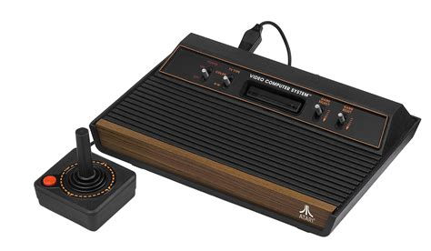
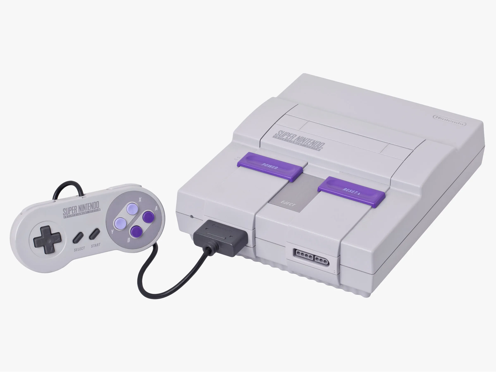
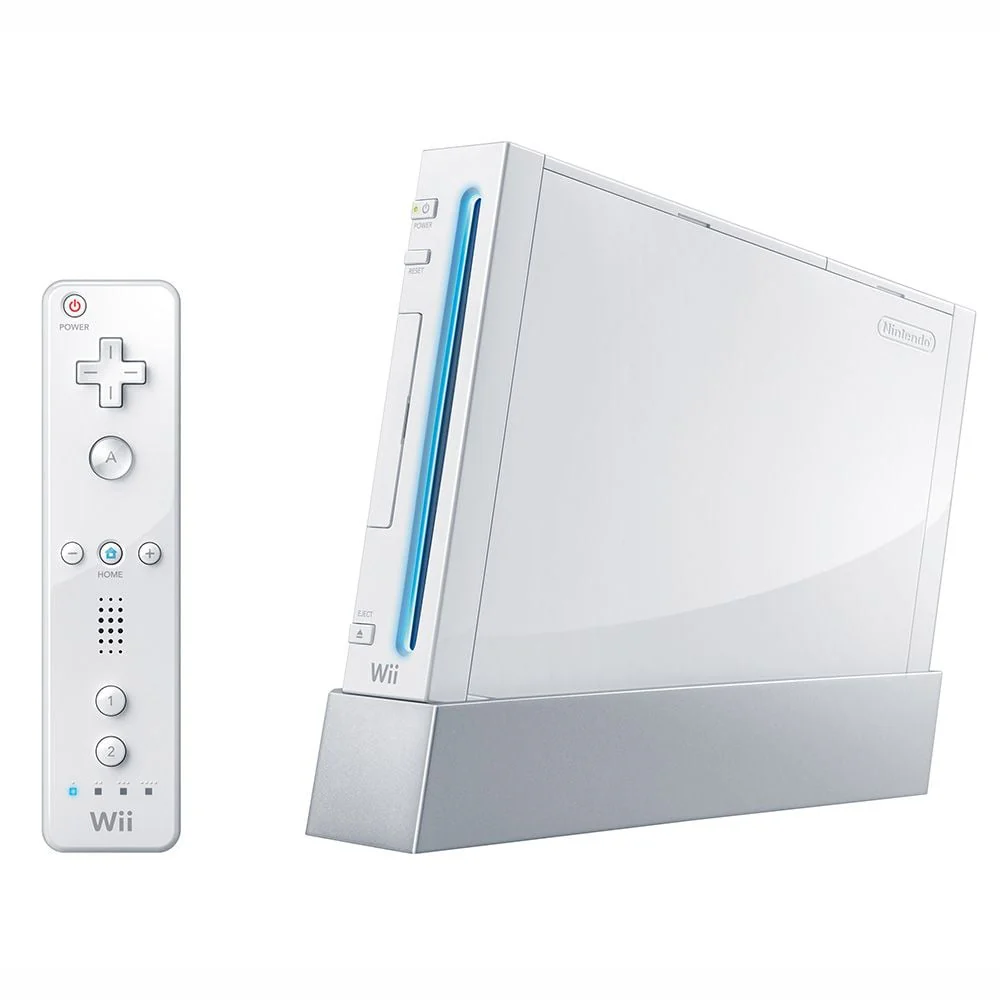
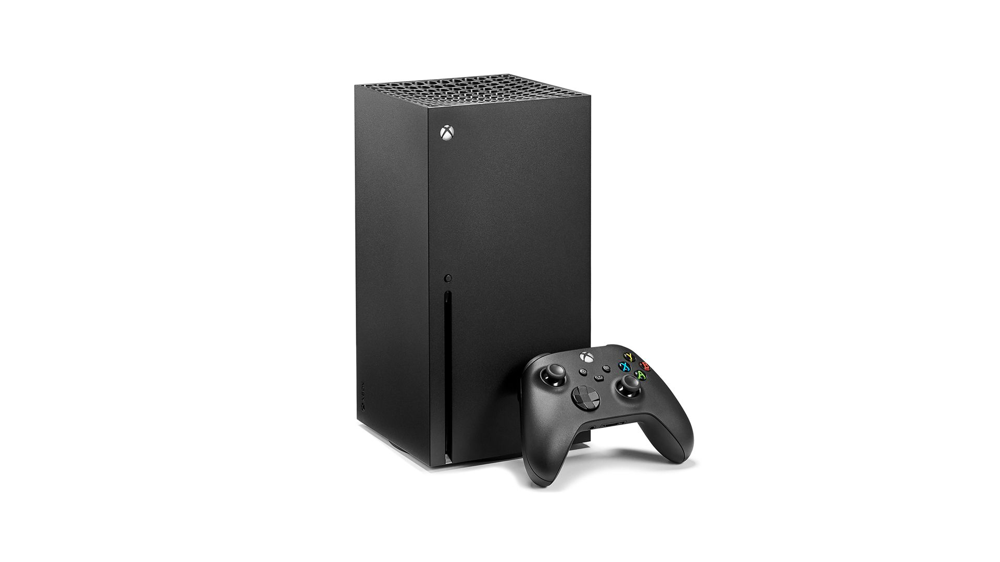

Early Era Home Consoles

Magnavox Odyssey² (1978)
The Magnavox Odyssey² was an early cartridge-based home console that combined video gaming with a built-in keyboard. It was designed to provide both entertainment and educational experiences, reflecting the experimental nature of early home gaming systems. Although it competed with Atari systems during the late 1970s and early 1980s, it gained a dedicated audience through its unique game library and hybrid design.

Atari 2600 (1977)
The Atari 2600 is widely regarded as the console that popularized home video gaming. Its interchangeable cartridge system allowed players to purchase and swap games easily, creating a rapidly expanding library of titles. Games such as Space Invaders and Pitfall helped establish video games as a mainstream form of entertainment in the late 1970s and early 1980s.

Sega Genesis / Mega Drive (1988)
Sega's Genesis console marked a major technological leap with its 16-bit processor and focus on faster, more action-oriented games. It helped establish Sega as a major competitor to Nintendo and introduced iconic franchises such as Sonic the Hedgehog. The Genesis also played a significant role in the expansion of multiplayer gaming through competitive and cooperative titles.

Super Nintendo Entertainment System (1990)
The Super Nintendo Entertainment System (SNES) refined the home gaming experience with improved graphics, sound capabilities, and a powerful game library. Titles such as Super Mario World, The Legend of Zelda: A Link to the Past, and Street Fighter II helped define the 16-bit generation and expanded the popularity of multiplayer gaming within home consoles.
Online Services and Connected Gaming

PlayStation Network (2006)
Sony introduced PlayStation Network (PSN) as a digital online service for PlayStation consoles. It allowed players to connect with friends, download digital games, and participate in multiplayer matches across the Internet. PSN marked an important step toward integrating social features, digital marketplaces, and online identities into the console gaming ecosystem.

Nintendo Wii Online Services (2006)
The Nintendo Wii introduced a unique approach to online gaming through the Nintendo Wi-Fi Connection service. While Nintendo historically focused on local multiplayer experiences, the Wii expanded connectivity by enabling online matchmaking, downloadable games through the Wii Virtual Console, and digital communication features.


Xbox 360 and Xbox Live
Microsoft's Xbox 360 helped establish online multiplayer gaming as a central feature of modern consoles through the Xbox Live service. Players could create persistent online profiles, communicate through voice chat, track achievements, and participate in large multiplayer communities. Xbox Live also introduced digital game distribution, downloadable content, and integrated matchmaking systems that shaped the structure of online console gaming for years to come.
Modern Consoles

PlayStation 5 (2020)
Sony’s PlayStation 5 represents a major advancement in console performance, combining powerful hardware with high-speed solid-state storage and advanced graphical capabilities. The system supports features such as real-time ray tracing, extremely fast loading times, and immersive audio technologies. Through the PlayStation Network, players can participate in online multiplayer gaming, download digital titles, and access cloud services that support modern connected gaming ecosystems.

Xbox Series X (2020)
Microsoft’s Xbox Series X continues the company’s emphasis on powerful hardware and online connectivity through the Xbox ecosystem. Integrated with Xbox Live and the Xbox Game Pass service, the console provides access to a large digital game library and seamless online multiplayer experiences. The Series X also emphasizes backward compatibility, allowing players to access titles from earlier Xbox generations while maintaining high performance and graphical fidelity.